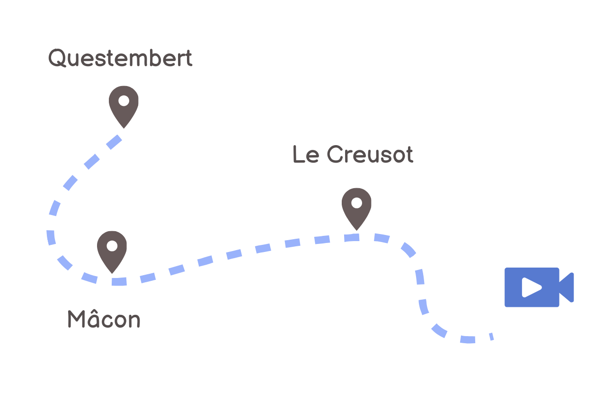
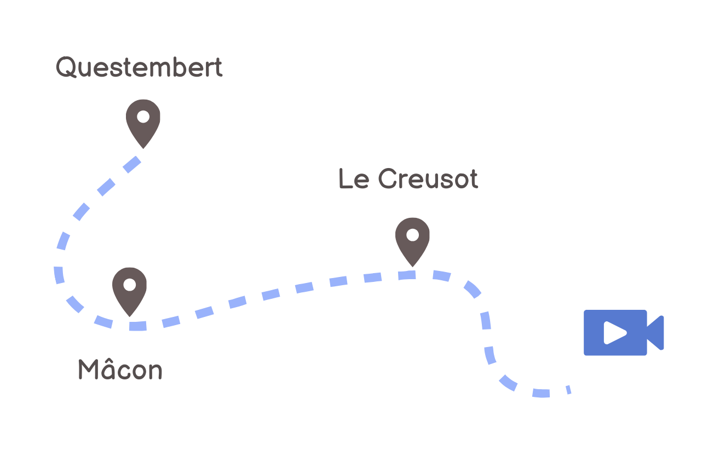

Communications internship
üìçMaintenance Travaux et Câblage, 56230 Questembert
Under the supervision of the human resources manager, my internship consisted of creating training documents and prevention videos for internal communication. For external communication, I was responsible for defining the tools for publishing on LinkedIn. I worked with the safety manager at the Questembert site, the quality manager, and the workshop staff.
Details of my tasks
- Writing a recommendation for communication on LinkedIn
- Publishing a video interview for LinkedIn
- Defining content to be published and creating an editorial calendar
- Creating interactive training materials and a quiz
- Conducting market research for the purchase of audiovisual equipment
- Collaborating with staff to organise filming
(in Brittany and Bourgogne)
- Writing, filming and editing videos on the hazards of each industrial site.
What I have brought to the company:
- An interactive presentation to facilitate integration at MTC,
- Prevention videos to reduce the risk of accidents at work,
- Advice on building loyalty among your LinkedIn community and expanding your network.
 
